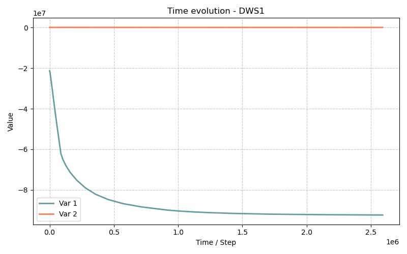

Modèle DWS1 — Séchage et Mouillage avec Sel (isotherme 1D)
Fichiers sources :
src/Models/ModelFiles/DWS1.c·test_examples/DWS1/DWS1Auteur du modèle : P. Dangla
Table des matières
- Contexte et objectif
- Hypothèses
- Variables et notation
- Modèle mathématique
- 4.1 Équations de conservation
- 4.2 Lois de flux
- 4.3 Relations constitutives et thermodynamiques
- Explication des fichiers d'entrée
- Résultats de la simulation
- Références bibliographiques
1. Contexte et objectif
Le modèle DWS1 (Drying-Wetting with Salt) permet d'étudier les transferts couplés eau-air-sel en milieu poreux, sous des conditions isothermes. Il modélise le transport d'eau (sous forme liquide et de vapeur), d'air sec et d'un sel dissous (par défaut du sulfate de sodium aqueux, \(\text{Na}_2\text{SO}_4\), ou \(\text{NaCl}\)).
Le cas d'application test_examples/DWS1/DWS1 correspond à un test de séchage isotherme d'une éprouvette de béton très peu perméable. Ce type de test reproduit l'évolution thermo-hydrique et la concentration de sels à la surface et au sein du béton soumis à une ambiance asséchante. Lorsque l'eau libre s'évapore, la concentration en sel augmente, ce qui modifie l'activité chimique de l'eau et donc l'équilibre thermodynamique global, impactant les profils hydriques.
L'éprouvette modélisée a une longueur de 1 cm (\(L = 0.01\) m), initialement très humide, et subit un assèchement important par l'un de ses bords.
2. Hypothèses
- Conditions isothermes : la température est supposée constante à \(T = 293\) K.
- Trois phases, quatre constituants : le modèle couvre la phase solide (matrice cimentaire rigide, \(\phi = 0.3\)), la phase liquide (eau + ions dissous formant le sel), et la phase gazeuse (air sec + vapeur d'eau).
- Sel dissous uniquement : la concentration concerne les ions aqueux. La précipitation/cristallisation pouvant déboucher sur des pores colmatés n'est pas traitée dans cette déclinaison simple.
- Effet osmotique : l'activité chimique de l'eau (\(a_w\)) dépend directement de la concentration en sel. La loi de Kelvin est par conséquent modifiée selon les lois de thermodynamique des solutions électrolytiques.
- Loi de Darcy et de Fick : l'advection des phases est pilotée par la perméabilité relative (Darcy), et la diffusion des constituants (vapeur et ions) par des lois de Fick.
- La composante gazeuse est un gaz parfait.
3. Variables et notation
Inconnues primaires (Variables de résolution)
| Symbole | Signification |
|---|---|
| \(h_r\) | Humidité relative (sans dimension) |
| \(p_g\) | Pression de la phase gazeuse (Pa) |
| \(c_s\) | Concentration molaire en sel dissous (mol/m³) |
Variables secondaires
| Symbole | Signification |
|---|---|
| \(p_l\) | Pression liquide (Pa) |
| \(p_c\) | Pression capillaire \(p_g - p_l\) (Pa) |
| \(\rho_l, \rho_g\) | Masse volumiques du liquide et du gaz (kg/m³) |
| \(s_l, s_g\) | Saturations liquide et gaz |
| \(a_w\) | Activité de l'eau |
4. Modèle mathématique
4.1 Équations de conservation
Le code résout trois équations de bilan sur le volume élémentaire représentatif :
1. Bilan de masse d'eau (liquide + vapeur) : $\(\frac{\partial m_T}{\partial t} + \nabla \cdot \mathbf{W}_T = 0\)$ avec \(m_T = \rho_l\,\phi\,s_l + \rho_g\,\phi\,s_g\) (on regroupe la masse fluide totale ici).
2. Bilan de masse d'air : $\(\frac{\partial m_A}{\partial t} + \nabla \cdot \mathbf{W}_A = 0\)$ avec \(m_A = \rho_a\,\phi\,s_g\).
3. Bilan molaire de sel : $\(\frac{\partial n_S}{\partial t} + \nabla \cdot \mathbf{W}_S = 0\)$ avec \(n_S = c_s\,\phi\,s_l\).
4.2 Lois de flux
1. Écoulements advectifs (Darcy) : $\(\mathbf{W}_l = - \frac{\rho_l\,k_\text{int}\,k_{rl}(p_c)}{\mu_l} \nabla p_l \qquad \text{et} \qquad \mathbf{W}_g = - \frac{\rho_g\,k_\text{int}\,k_{rg}(p_c)}{\mu_g} \nabla p_g\)$
2. Diffusion de vapeur et advection (Fick + Darcy) : $\(\mathbf{W}_v = c_v\,\mathbf{W}_g - \phi\,s_g\,\tau_g\,D_{av} \nabla \rho_v\)$ où \(c_v = \rho_v/\rho_g\) la fraction et \(D_{av}\) la diffusivité de la vapeur dans l'air.
Le flux total s'écrit \(\mathbf{W}_T = \mathbf{W}_l + \mathbf{W}_g\). Le flux d'air \(\mathbf{W}_A = \mathbf{W}_g - \mathbf{W}_v\).
3. Transport du sel : $\(\mathbf{W}_S = \frac{c_s}{\rho_l} \mathbf{W}_l - \phi\,s_l\,\tau_l\,D_S \nabla c_s\)$ Le sel est transporté advectivement par l'eau liquide (le terme \(c_s / \rho_l\) convertit kg/m².s en flux molaire) et se diffuse suivant le gradient de concentration.
4.3 Relations constitutives et thermodynamiques
Équilibre thermodynamique liquide-gaz L'influence du sel justifie l'utilisation d'une loi de Kelvin généralisée tenant compte de l'activité de l'eau \(a_w\) (via le facteur osmotique) : $\(p_l = p_{l0} + \frac{R T}{V_w} (\ln h_r - \ln a_w(c_s))\)$ Où \(V_w\) est le volume molaire de l'eau. Dans une solution pure, \(a_w=1\), ce qui redonne la loi habituelle \(p_l = p_{l0} + \frac{R T}{V_w} \ln h_r\). Ici, la présence de sel diminue \(\ln a_w\), ce qui augmente les effets de capillarité et retient l'eau.
Le logarithme de l'activité du sel \(\ln a_w(c_s)\) ainsi que l'activité des ions sont modélisés selon des approches poussées type Pitzer (Lin et Lee).
5. Explication des fichiers d'entrée
Le comportement du modèle pour l'exemple est géré par les fichiers dans test_examples/DWS1/ : DWS1 (le script principal de simulation) et beton (le fichier de données matériau).
Fichier DWS1 pas à pas
-
Géométrie et Maillage
Le système définit un espace 1D (plan). Le maillage comporte 100 éléments répartis sur une longueur de 1 cm (\(L = 0.01\) m).
-
Matériau
On définit le modèleMaterial Model = DWS1 porosite = 0.3 kl_int = 1.e-20 kg_int = 1.e-18 p_c3 = 1.e6 Curves = beton p_c = Range{x1 = 0,x2 = 1.e9,n = 401} s_l = Van-Genuchten(...)DWS1.
Le béton simulé a une perméabilité intrinsèque à l'eau \(K_{int,l} = 10^{-20}\) m² et au gaz \(K_{int,g} = 10^{-18}\) m², et une forte porosité de \(0.3\). Les lois de rétention \(s_l(p_c)\) et de perméabilité relative sont appelées depuis le fichierbeton(table générée numériquement), ajustées sur des relations de Van-Genuchten. -
Conditions initiales
Le domaine s'initialise avec les valeurs desInitialization 3 Region = 2 Unknown = h_r Field = 1 Region = 2 Unknown = p_g Field = 2 Region = 2 Unknown = c_s Field = 4Fieldsappelés : h_rinitiale =8.49e-01(~85 % d'humidité rel.).p_ginitiale =100 000Pa (Pression atmosphérique).-
c_sinitiale =100mol/m³ de sels dissous. -
Conditions aux limites (Séchage)
C'est la force motrice. Au bord gauche (Functions 1 N = 2 F(0) = 1 F(86400) = 5.87428931e-1 Boundary Conditions 2 Region = 1 Unknown = h_r Field = 1 Function = 1 Region = 1 Unknown = p_g Field = 2 Function = 0Region = 1), la fonction imposée module l'h_r. Sur 1 jour (86 400 s), l'humidité au bord passe de \(85\%\) à \(85 \% \times 0.587 \approx 49.9\%\). Un fort gradient hydrique crée le séchage de l'éprouvette. -
Solveur Temps
Le calcul trace la réponse à l'instant initial, à 10 jours (\(8.64 \cdot 10^5\) s) et à la fin du séchage à 30 jours (\(2.592 \cdot 10^6\) s).
Fichier beton (courbes tabulées)
Ce fichier regroupe les paramètres des courbes en forme de liste, permettant des interpolations rapides évitant le calcul lourd des puissances fractionnaires dans l'algorithme de Newton. Les colonnes définissent $p_c$, $s_l$, $k_{rl}$ et $k_{rg}$.
6. Résultats de la simulation
Le calcul (durée \(\sim\) une seconde sur un poste moderne, en une centaine de pas de temps Newton) génère des fichiers de résultats dont on tire les constats suivants :
Au début du séchage (\(t = 0\)) - L'humidité est répartie de manière homogène à 84.9% dans le béton, et la concentration de sel homogène est à \(100\) mol/m³. - La pression de l'eau liquide subit de la succion, estimée à \(P_l \approx -21.2\) MPa.
A la fin du séchage (30 jours, fichier .t2)
- Humidité : Le choc humide (baisse à 49.9% de paroi) va faire sécher l'échantillon. À la fin, la face externe est à \(h_r=49.89\%\) et l'eau la plus enfouie (\(x=0.01\) m) s'est équilibrée à 50.21%. Le matériau s'est asséché quasi-intégralement grâce à la porosité et l'échelle infime de l'échantillon.
- Concentration en sel : Partant de \(c_s = 100\) mol/m³, l'évaporation de la phase liquide de solvant contraint les ions à se concentrer. En fin d'essai, elle bondit à environ \(203\) mol/m³, homogènement répartie.
- Pressions : Du fait de la baisse de la saturation (\(S_l \sim 42.9\%\)), l'effet de tension capillaire s'affole. La pression liquide chute drastiquement à \(P_l \approx -92.5\) MPa. L'activité de l'eau réagit à la présence plus concentrée d'ions, montrant que les forces osmotiques renforcent le potentiel de rétention de l'eau dans le béton.

7. Références bibliographiques
- Dangla, P. — Bil : a FEM/FVM platform for multiphysics simulations.
- Millington, R. J. & Quirk, J. P. (1961) Modèles de tortuosité gazeuse.
- Nguyen, T.Q. & relations de Lin & Lee — Modèles basés sur Pitzer pour le calcul du logarithme de l'activité pour les solutions salines et idéales (
lng_TQN,lna_iimplémentés dans M5/DWS1). - Van Genuchten (1980) & Mualem (1976) pour les relations de perméabilités relatives et succion. (Graphes générés automatiquement pour l'exemple DWS1)